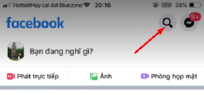
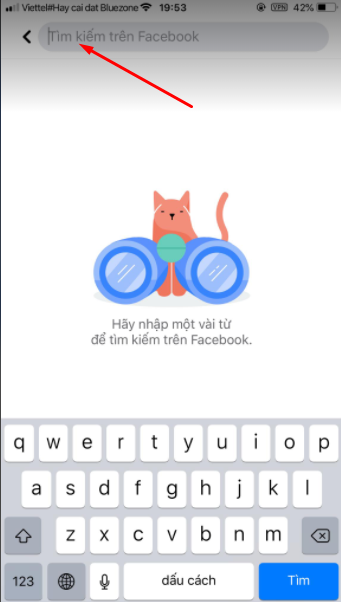
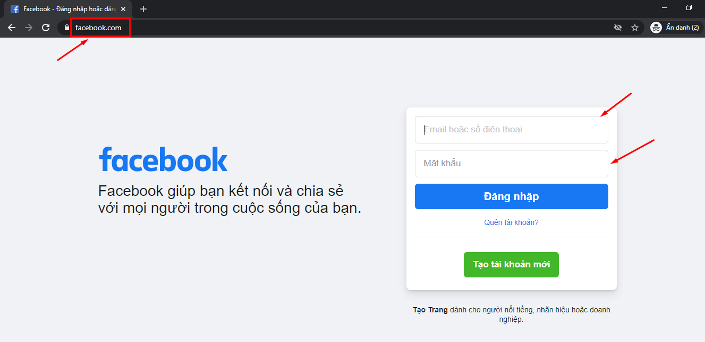
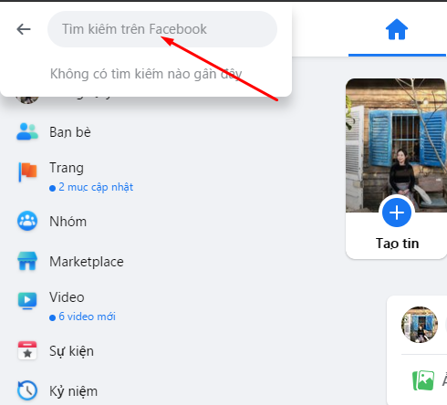

Cách tìm kiếm Facebook thông qua số điện thoại đơn giản nhất

Ty Nguyen
CEO ❤️ AhaChat. Love babies & chatbot.Khi bạn biết số điện thoại của một người và muốn tìm thông tin tài khoản Facebook qua số điện thoại đó nhưng lại chưa biết cách tìm kiếm thế nào. Vậy thì còn chần chừ gì nữa mà không đọc ngay bài viết dưới đây để giải đáp thắc mắc của bạn về cách tìm Facebook qua số điện thoại. Cùng theo dõi nhé!
*CẬP NHẬT: Hiện tại Facebook đã dừng tính năng cho phép tìm kiếm Facebook cá nhân thông qua số điện thoại. Tuy nhiên, bạn vẫn có thể thử áp dụng cách hướng dẫn Thứ nhất ở bài viết này trong trường hợp nếu chủ nhân của số điện thoại có dùng Facebook để đăng bài trên các group công khai và có để lại số điện thoại liên hệ trên đấy => Thì truy vấn tìm kiếm sẽ trả về kết quả là Chủ nhân của số điện thoại đã đăng tin.*
1. Lợi ích của việc dùng số điện thoại để tìm Facebook người khác
Việc tìm Facebook qua số điện thoại cũng mang lại lợi ích cho người tìm kiếm
Mặc dù tìm Facebook qua số điện thoại được xem là một tìm kiếm đơn giản nhưng đây cũng là một tìm kiếm khá cần thiết bởi nó có những lợi ích sau:
Nếu có số lạ gọi đến bạn, thông qua tìm kiếm số điện thoại trên Facebook bạn có thể xác định được danh tính của họ nhờ thông tin tài khoản được tìm kiếm trên Facebook.
Việc tìm kiếm được facebook thông qua số điện thoại sẽ giúp bạn cảnh giác được những hành vi lừa đảo. Bởi có những trường hợp thường public số điện thoại của những kẻ chuyên lừa đảo trên các hội nhóm Facebook.
2. Tìm kiếm Facebook qua số điện thoại bằng ứng dụng Facebook trên điện thoại
Để tìm kiếm Facebook của một ai đó qua số điện thoại thì điều kiện là người dùng đó dùng số điện thoại để đăng ký Facebook. Và khi có số điện thoại, bạn có thể tìm kiếm Facebook qua số điện thoại bằng ứng dụng Facebook trên điện thoại, bạn làm theo các bước hướng dẫn sau:
- Bước 1: Bạn mở ứng dụng Facebook trên điện thoại di động của bạn. Biểu tượng Facebook trên ứng dụng điện thoại là hình chữ “f” màu trắng nền xanh.
- Bước 2: Đăng nhập vào tài khoản Facebook cá nhân của bạn, khi đăng nhập xong giao diện trang chủ của Facebook xuất hiện, bạn ấn chọn vào biểu tượng kính lúp để bắt đầu tìm kiếm.

- Bước 3: Nhập chính xác số điện thoại mà bạn muốn thông qua đó để tìm kiếm địa chỉ Facebook vào thanh Tìm kiếm trên Facebook

Bước 4: Tiếp đó, hệ thống sẽ tự động quét thông tin tài khoản Facebook tương ứng với số điện thoại mà bạn đã nhập vào. Lúc này sẽ có 2 trường hợp xảy ra:
Nếu có Facebook nào tương ứng với số điện thoại bạn nhập tìm kiếm thì khi tìm kiếm Facebook đó sẽ được hiện ra.
Nếu không có tài khoản Facebook nào tương ứng với số điện thoại bạn tìm kiếm thì sẽ có thông báo không có kết quả nào phù hợp với số điện thoại bạn vừa tìm kiếm.
Như vậy là mình đã hướng dẫn bạn cách tìm Facebook qua số điện thoại bằng ứng dụng Facebook trên điện thoại.
3. Tìm kiếm Facebook qua số điện thoại thông qua trình duyệt web
Có nhiều người không có ứng dụng Facebook trên điện thoại di động thì bạn có thể tìm kiếm Facebook qua số điện thoại qua trình duyệt web. Cách thực hiện như sau:
- Bước 1: Bạn truy cập vào website facebook.com trên trình duyệt web của máy tính. Sau đó đăng nhập tài khoản Facebook cá nhân của bạn

- Bước 2: Nhập số điện thoại mà bạn muốn tìm kiếm Facebook cá nhân trên thanh tìm kiếm trên Facebook

Điều kiện để tìm kiếm được Facebook cá nhân thông qua số điện thoại là người dùng đó dùng số điện thoại để đăng ký tài khoản.
- Bước 3: Cuối cùng, hệ thống sẽ tự động quét tài khoản Facebook cá nhân tương ứng với số điện thoại bạn tìm kiếm.
Với các bước cơ bản trên là bạn đã có thể tìm kiếm được tài khoản Facebook thông qua số điện thoại, rất đơn giản phải không nào.
Hy vọng với những chia sẻ trên đây đã giúp bạn biết được cách tìm kiếm Facebook qua số điện thoại. Nếu bạn có bất kỳ thắc mắc hay góp ý gì thì đừng quên để lại ý kiến của bạn ngay mục bình luận dưới đây, chúng tôi sẽ phản hồi bạn trong thời gian sớm nhất. Chúc bạn thực hiện thành công.